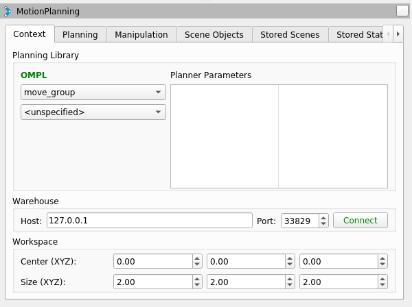

Warehouse - Persistent Scenes and States
The “MotionPlanning” plugin of RViz offers the possibility to save complete planning scenes and robot states persistently. Currently, two storage plugins (based on warehouse_ros) are available:
warehouse_ros_mongo, which uses MongoDB as backend
warehouse_ros_sqlite, which uses SQLite as backend
You can install both of them with your favourite package manager
(e.g. apt-get install ros-rolling-warehouse-ros-mongo) or
build them from source
(of course, you’ll have to check out the corresponding repository into your src folder for that).
Storage plugin selection
The warehouse plugin and settings have to be specified in the launch files of your MoveIt configuration.
You should adapt persistent_scenes_demo.launch.py if you do not wish to use the MongoDB plugin.
The storage plugin is determined by the parameter warehouse_plugin.
Valid options are warehouse_ros_mongo::MongoDatabaseConnection for MongoDB and
warehouse_ros_sqlite::DatabaseConnection for SQLite.
Furthermore, the parameters warehouse_host and warehouse_port configure the connection details.
In case of the SQLite plugin, warehouse_host contains the path to the database file,
and warehouse_port is unused.
If the database file does not exist yet, an empty database will be created.
Add a dictionary with the warehouse_ros options
warehouse_ros_config = {
# For warehouse_ros_sqlite
"warehouse_plugin": "warehouse_ros_sqlite::DatabaseConnection",
"warehouse_host": sqlite_database,
# For warehouse_ros_mongodb use the following instead
# "warehouse_port": 33829,
# "warehouse_host": "localhost",
# "warehouse_plugin": "warehouse_ros_mongo::MongoDatabaseConnection",
}
Add it to the Move Group config
run_move_group_node = Node(
package="moveit_ros_move_group",
executable="move_group",
output="screen",
parameters=[
moveit_config.to_dict(),
# here
warehouse_ros_config,
],
)
and to the RViz config
rviz_node = Node(
package="rviz2",
executable="rviz2",
name="rviz2",
output="log",
arguments=["-d", rviz_config_file],
parameters=[
moveit_config.robot_description,
moveit_config.robot_description_semantic,
moveit_config.robot_description_kinematics,
moveit_config.planning_pipelines,
moveit_config.joint_limits,
# here
warehouse_ros_config,
],
)
Optionally, start the MongoDB server (uncomment if necessary)
# mongodb_server_node = Node(
# package="warehouse_ros_mongo",
# executable="mongo_wrapper_ros.py",
# parameters=[
# warehouse_ros_config,
# ],
# output="screen",
# )
Connecting to the storage backend
After choosing the storage plugin and configuring the launch.py file, run RViz using
ros2 launch moveit2_tutorials persistent_scenes_demo.launch.py
In RViz, navigate to the “Context” tab of the “MotionPlanning” window. Verify the connection details (host/port for MongoDB, file path for SQLite) and click on “Connect”.
{kind=link}
After that, a dialogue box will appear and ask you whether you’d like to erase all current states and scenes in RViz (not in the database, the persistent data is not affected by that). As you just started RViz, you can safely select “yes”.
Saving/Loading scenes and states
Now that you connected successfully, you can save and restore robot states and planned scenes. This can be done in the “Stored Scenes” resp. “Stored States” tab in RViz.
To save a start state, drag the green manipulator to the correct position and click “Save Start”. The goal state (orange manipulator) can be saved with the “Save Goal” button. To restore a state, select it in the list and click on “Set as Start” resp. “Set as Goal”.